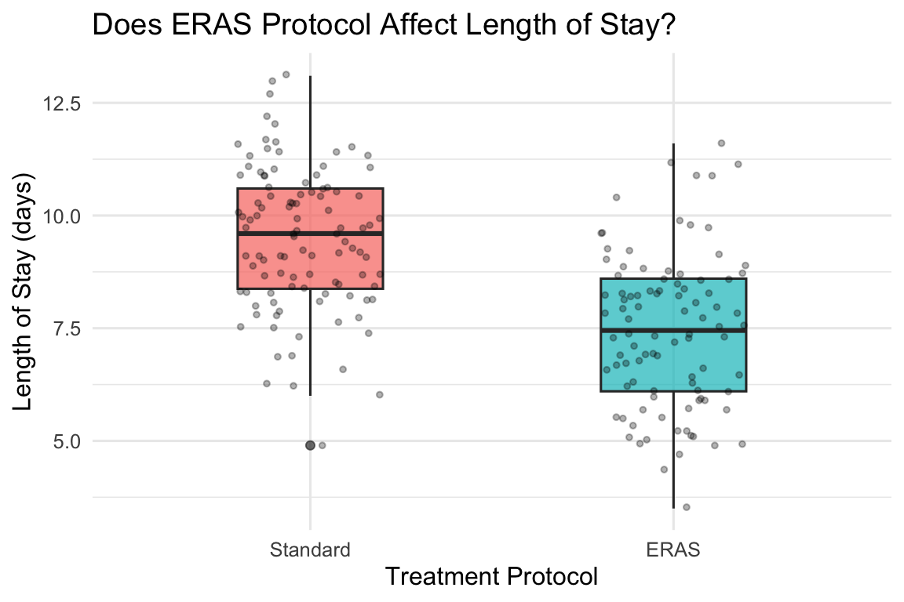
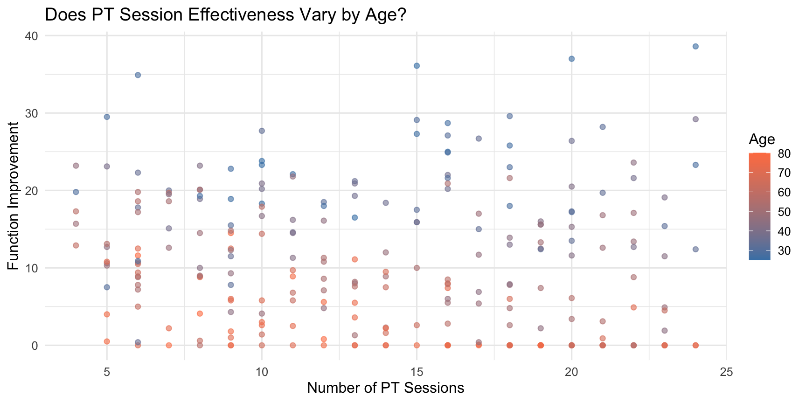
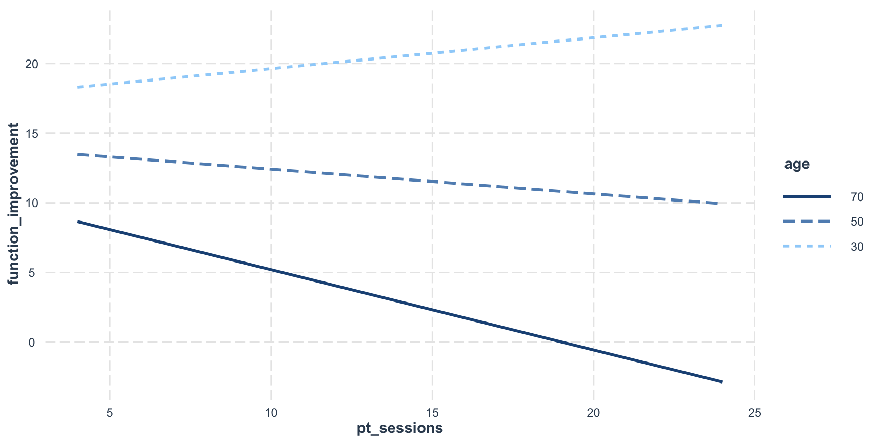

Linear Regression 2: Dummy Variables and Interaction Effects
Week 12 and Week 13
2026-04-01
Today’s Learning Goals
By the end of this lecture, you will be able to:
Create and interpret dummy variables for categorical predictors in regression (binary and multi-level)
Test and interpret interaction effects in regression
Compute marginal effects to describe how a predictor’s impact varies across groups
Beyond Continuous Predictors
In Week 11, we used continuous predictors (e.g., wait time, staffing hours) to predict outcomes.
But many important variables in healthcare are categorical (e.g., hospital type, insurance status, treatment protocol, or region).
Moreover, the effect of a continuous variable can differ depending on those categories.
Dummy variables and interactions answer more nuanced questions:
Do outcomes differ across groups, after controlling for other factors?
Does the effect of one variable change depending on the level of another?
Why This Matters for Healthcare Management
These techniques directly support real management decisions:
Resource allocation: Should we prioritize staffing investments in non-profit hospitals, where the satisfaction payoff may be larger?
Cost management: Does the Enhanced Recovery After Surgery (ERAS) protocol reduce length of stay equally across patient severity levels, or should we target it to specific groups?
Performance benchmarking: Are we comparing hospitals fairly if we don’t account for differences in patient mix and hospital type?
Today’s Roadmap
Dummy Variables – Including categorical predictors (binary and multi-level) in regression
Interaction Effects – Testing whether the effect of one variable depends on another
Continuous x Categorical
Categorical x Categorical
Continuous x Continuous
1. Dummy Variables
What Are Dummy Variables?
Dummy variables (indicator variables) are binary variables representing categorical group membership using 0s and 1s.
For a categorical variable with k categories, we create k-1 dummy variables, with one category serving as the reference group.
Dummy 2: Critical Access (1 if Critical Access, 0 otherwise)
Community = reference (both dummies = 0)
When to Use Dummy Variables
Regression requires numerical inputs, but categorical variables are not inherently numerical. Simply assigning numbers (e.g., Teaching=1, Community=2, Critical Access=3) would imply a false ordering.
Dummy variables solve this by representing group membership as 0s and 1s, allowing us to:
Include categorical predictors in regression (hospital type, insurance status, treatment group)
Test whether group differences are statistically significant while controlling for other variables
Quantify the magnitude of differences between categories
Binary Categorical Variables
For a variable with two categories, we need one dummy variable:
Patient
Insurance Status
Dummy: Insured
1
Insured
1
2
Uninsured
0
3
Insured
1
4
Uninsured
0
The coefficient on the dummy variable represents the difference in the outcome between the two groups (Insured vs. Uninsured).
Example Case: Treatment Protocol Comparison
The problem: Traditional surgical recovery involves extended hospital stays, which are costly and can lead to complications.
A better approach: Enhanced Recovery After Surgery (ERAS) protocols use evidence-based practices: better pain management, early mobilization, and earlier nutrition.
Let’s compare patient outcomes between Standard care and ERAS protocols to quantify the treatment effect using a dummy variable.
Loading Packages and Data
Let’s load the required packages and the data using the code below:
library(tidyverse) # data wrangling and visualizationlibrary(emmeans) # pairwise comparisons across groupslibrary(interactions) # visualizing interaction effectssurgical_data <-read.csv("https://raw.githubusercontent.com/mba642-spring-26/mba642-spring-26.github.io/refs/heads/main/datasets/week12_surgical_data.csv")head(surgical_data, 5)
X patient_id protocol age bmi surgery_complexity length_of_stay
1 1 1 Standard 77 27.3 3 9.8
2 2 2 Standard 56 27.1 3 10.4
3 3 3 Standard 59 23.7 3 9.3
4 4 4 ERAS 49 32.8 3 9.6
5 5 5 Standard 74 23.8 3 11.0
Setting the Reference Category
We use factor() to set “Standard” as the reference category:
When we include protocol in the model, R automatically creates the dummy variable for us.
The first level specified in factor() (here, "Standard") becomes the reference category.
Visualizing the Data
Let’s visually check the patterns in the data before fitting the model:
Code
ggplot(surgical_data, aes(x = protocol, y = length_of_stay, fill = protocol)) +geom_boxplot(alpha =0.7, width =0.4) +geom_jitter(width =0.2, alpha =0.3, size =1) +labs(x ="Treatment Protocol",y ="Length of Stay (days)",title ="Does ERAS Protocol Affect Length of Stay?" ) +theme_minimal(base_size =12) +theme(legend.position ="none")

Figure 1
Fitting the Model
Now we can fit a linear regression model to estimate the effect of the ERAS protocol on length of stay, controlling for age, BMI, and surgery complexity
We can use the same lm() function as before, just including the protocol variable as a predictor
The coefficient for protocolERAS is approximately -1.79.
Patients in the ERAS protocol have 1.79 days shorter length of stay than patients in the Standard protocol, holding age, BMI, and surgery complexity constant.
Manual Calculation with Dummy Variables
Patient profile: A 65-year-old patient with BMI of 30 and surgery complexity of 2.
For the same patient (age 65, BMI 30, complexity 2):
Standard protocol: 9.41 days
ERAS protocol: 7.62 days
Difference: -1.79 days = ERAS coefficient (-1.79)
The dummy variable coefficient represents the difference in predicted outcomes between the two groups, holding all other variables constant. This is true regardless of the patient profile we plug in.
2. Multi-Level Categorical Variables
Why k-1 Dummy Variables?
When a categorical variable has more than two levels, we need k-1 dummy variables (where k is the number of categories).
Including a dummy for every category would create perfect multicollinearity.
The dummy variables would sum to 1 for every observation, perfectly correlated with the intercept.
Each of the k-1 dummy coefficients represents the difference between that category and the reference category.
Example Case: Hospital Type Comparison
Question: Do 30-day readmission rates differ across 3 hospital types?
Teaching hospitals: Large academic medical centers handling complex cases
Community hospitals: General hospitals serving local populations
Critical Access hospitals: Small rural hospitals with limited resources
Let’s compare readmission rates across these three hospital types while controlling for patient characteristics.
contrast estimate SE df t.ratio p.value
Community - Teaching 2.36 0.294 245 8.009 <0.0001
Community - Critical Access -3.26 0.300 245 -10.864 <0.0001
Teaching - Critical Access -5.61 0.344 245 -16.324 <0.0001
P value adjustment: tukey method for comparing a family of 3 estimates
The interaction coefficient \(\beta_3\) captures how the effect of \(X_1\)changes across levels of \(X_2\) (or vice versa)
When to Use Interactions
Use interaction terms when:
Theory or prior research suggests an effect should vary across groups
Visual inspection shows different slopes for different groups
You want to test whether an intervention works differently for different populations or conditions
Examples:
A medication may work better for younger vs. older patients
Additional staffing may have different impacts in big vs. small hospitals
A new policy may affect urban and rural hospitals differently
3.1. Continuous x Categorical Interaction
Example: Does Staffing Effect Vary by Hospital Ownership?
Question: Does improving nurse staffing increase patient satisfaction equally in all hospitals?
Why it might differ:
For-Profit hospitals: Investor-owned, focused on financial performance
Non-Profit hospitals: Community-owned, mission-driven, may invest more in quality
Hypothesis: Additional nurses might have a bigger impact in non-profit hospitals
Loading the Data
Let’s load the data using the code below:
satisfaction_data <-read.csv("https://raw.githubusercontent.com/mba642-spring-26/mba642-spring-26.github.io/refs/heads/main/datasets/week12_satisfaction_data.csv")# Set ownership as a factor with For-Profit as the reference categorysatisfaction_data <- satisfaction_data %>%mutate(ownership =factor(ownership, levels =c("For-Profit", "Non-Profit")))head(satisfaction_data, 5)
Question: Does IT investment improve hospital quality scores equally for Teaching and Non-Teaching hospitals?
Why it might differ:
Teaching hospitals: Have research missions, complex case mixes, and specialized staff who can leverage advanced IT tools (e.g., clinical decision support, predictive analytics)
Non-Teaching hospitals: May lack the technical workforce and workflows to fully utilize IT investments
Hypothesis: IT investment may have a stronger effect in Teaching hospitals where the infrastructure and expertise exist to translate technology into quality gains
Practice Dataset: Hospital Quality
We will use a dataset of 350 U.S. hospitals with the following variables (for all three practice activities):
Variable
Type
Description
hospital_id
ID
Unique hospital identifier
region
Categorical
U.S. region (Midwest, Northeast, South, West)
teaching_status
Categorical
Teaching or Non-Teaching
it_investment
Continuous
Annual IT spending (in $1,000s)
avg_los
Continuous
Average length of stay (days)
quality_score
Continuous
Composite quality score (0–100)
Practice 1: Continuous x Categorical Interaction
Step 1. Load the data and set the reference category:
Let’s load the dataset and set “Non-Teaching” as the reference category for teaching_status:
Let’s visually inspect the patterns in the data before fitting the model:
Code
ggplot(pt_data, aes(x = pt_sessions, y = function_improvement, color = age)) +geom_point(alpha =0.6) +scale_color_gradient(low ="steelblue", high ="coral") +labs(x ="Number of PT Sessions",y ="Function Improvement",color ="Age",title ="Does PT Session Effectiveness Vary by Age?" ) +theme_minimal(base_size =12)

Figure 7
Fitting the Model
Let’s fit the model with the interaction between PT sessions and age:
# pt_sessions * age = pt_sessions + age + pt_sessions:agemodel_pt <-lm(function_improvement ~ pt_sessions * age,data = pt_data)summary(model_pt)
Interpreting the Results
Regression Results: PT Sessions x Age Interaction
term
estimate
std.error
statistic
p.value
conf.low
conf.high
(Intercept)
22.2460
3.1492
7.0639
0.0000
16.0431
28.4490
pt_sessions
0.8206
0.2137
3.8399
0.0002
0.3997
1.2415
age
-0.1612
0.0583
-2.7647
0.0061
-0.2761
-0.0464
pt_sessions:age
-0.0200
0.0040
-4.9948
0.0000
-0.0278
-0.0121
Understanding the Coefficients
pt_sessions (0.82): Effect of one additional PT session when age = 0 (not meaningful)
age (-0.16): Effect of one year of age when pt_sessions = 0 (not meaningful)
pt_sessions:age (-0.02): THE INTERACTION – for each additional year of age, the benefit of one PT session decreases by 0.02 points
Marginal effect formula:
\[\text{Effect of PT Sessions} = \beta_{\text{pt_sessions}} + \beta_{\text{interaction}} \times \text{Age}\]
Computing Marginal Effects at Different Ages
Age 30: Effect = 0.82 + (30 × -0.02) = 0.22 points per session
Age 50: Effect = 0.82 + (50 × -0.02) = -0.18 points per session
Age 70: Effect = 0.82 + (70 × -0.02) = -0.58 points per session
The effect of PT sessions changes dramatically with age. Positive for younger patients, potentially negative for older patients.
Visualizing with probe_interaction()
We can understand the interaction better by visualizing the predicted improvement across PT sessions for different ages using probe_interaction(), which is a part of the interactions package:
probe_interaction(model_pt, # fitted modelpred = pt_sessions, # x-axis variablemodx = age, # moderator variablemodx.values =c(30, 50, 70)) # values to plot separate lines
JOHNSON-NEYMAN INTERVAL
When age is OUTSIDE the interval [31.18, 47.33], the slope of pt_sessions
is p < .05.
Note: The range of observed values of age is [25.00, 80.00]
SIMPLE SLOPES ANALYSIS
Slope of pt_sessions when age = 30.00:
Est. S.E. t val. p
------ ------ -------- ------
0.22 0.10 2.12 0.03
Slope of pt_sessions when age = 50.00:
Est. S.E. t val. p
------- ------ -------- ------
-0.18 0.06 -2.90 0.00
Slope of pt_sessions when age = 70.00:
Est. S.E. t val. p
------- ------ -------- ------
-0.58 0.10 -5.97 0.00

Figure 8
Interpreting the Visualization
Simple Slopes Analysis:
Age 30: Positive slope – PT sessions are beneficial
Age 50: Negative slope – PT sessions are associated with worse outcomes
Age 70: Negative slope – PT sessions are associated with worse outcomes
Key insight:
The interaction creates a crossover effect where the treatment benefit reverses direction in different subgroups.
In practice, this would warrant investigation into confounding factors (e.g., sicker older patients may be prescribed more PT sessions, making PT appear less effective).
Practice 3: Continuous x Continuous Interaction
Question: Does the benefit of IT investment on quality depend on a hospital’s average length of stay?
Why it might differ:
Low avg LOS hospitals: Likely efficient, high-turnover facilities – IT investments in scheduling and throughput tools may directly boost quality metrics
High avg LOS hospitals: Often treating sicker or more complex patients – IT alone may not overcome the clinical challenges that drive longer stays
Hypothesis: IT investment may have a stronger quality impact in hospitals with lower average length of stay
Practice 3: Continuous x Continuous Interaction
Step 1. Using the same quality_data, visualize the relationship:
ggplot(quality_data, aes(x = ___, y = ___, color = ___)) +geom_point(alpha =0.6) +scale_color_gradient(low ="steelblue", high ="coral") +labs(x ="IT Investment ($K)", y ="Quality Score", color ="Avg LOS",title ="Does IT Investment Effectiveness Depend on Avg LOS?") +theme_minimal(base_size =12)
Write out the marginal effect formula for it_investment: \[\text{Effect of IT Investment} = \beta_{\text{it_investment}} + \beta_{\text{interaction}} \times \text{Avg LOS}\]
Compute the effect of IT investment at avg LOS = 3 days, 5 days, and 7 days
Practice 3: Continuous x Continuous Interaction
Step 4. Visualize and discuss:
Use probe_interaction() to visualize the effect of IT investment at avg LOS = 3 days, 5 days, and 7 days (the same values from Q2):
4. Is the interaction term statistically significant? If not, what does that tell hospital administrators – should they differentiate their IT investment strategy based on average length of stay, or can they apply a uniform approach?
Summary
Key Takeaways
Dummy variables let us include categorical predictors in regression using 0s and 1s
We can not only compare two categories or groups, but also multiple categories by creating k-1 dummy variables
Use emmeans() for pairwise comparisons across multi-level categorical variables
Interaction effects test whether the effect of one variable depends on another
In interaction models, main effects have conditional interpretations (at zero or reference level)
Use probe_interaction() for visualizing interaction effects
Assignments
Week 12 Reflection: Please share your thoughts on the lecture
3 interesting things
3 confusing or unclear things
Due by 11:59pm on Sunday, April 5.
Assignments
Week 13 Reflection: Please share your thoughts on the lecture
3 interesting things
3 confusing or unclear things
Lab Assignment 5: Linear Regression
Both are due by 11:59pm on Sunday, April 12.
References
Statistical Methods:
Gelman, A., & Hill, J. (2006). Data Analysis Using Regression and Multilevel/Hierarchical Models. Cambridge University Press.
James, G., Witten, D., Hastie, T., & Tibshirani, R. (2021). An Introduction to Statistical Learning with Applications in R (2nd ed.). Springer.
Healthcare Applications:
Katikam, S. M., et al. (2025). Evaluation of ERAS Protocols in Abdominal Surgery. Journal of Pharmacy & Bioallied Sciences, 17(Suppl 2), S1805-S1807.
Horwitz, L. I., et al. (2017). Hospital characteristics associated with risk-standardized readmission rates. Medical Care, 55(5), 528-534.
Turk, M. T., et al. (2023). Stakeholder Analysis: Medicare Diabetes Prevention Program. American Journal of Managed Care, 29(6), 308-312.